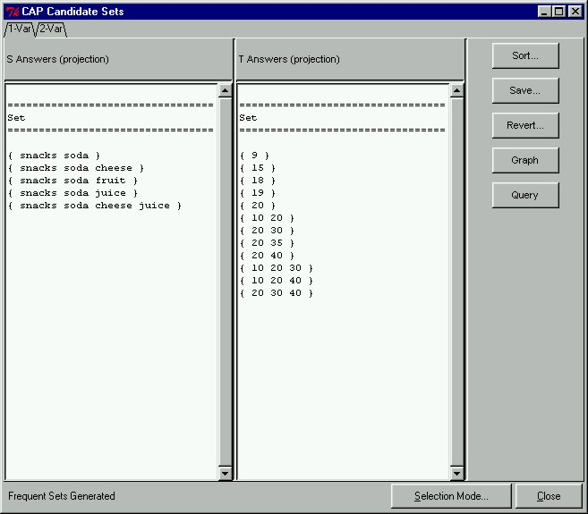

 |
One-Variable Frequent SetsAfter the CAP algorithm is finished executing, a new window will open displaying all the one-variable frequent sets and two-variable candidate pairs. In the window shown here, we see the results of our constrained frequent set mining. The left hand side panel in the CAP Candidate Sets window shows frequent antecedent sets satisfying all antecedent constraints, while the right hand side panel shows the consequent sets satisfying all consequent constraints.
|